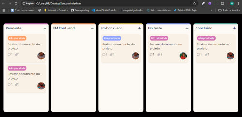
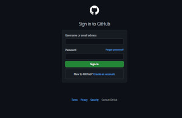

Sou formada em Gestão da Tecnologia da Informação e estou em transição de carreira para o desenvolvimento web, área pela qual sou apaixonada.
Atualmente, estou a fazer o curso de Desenvolvimento Front-End pela Anhanguera e venho me dedicado diariamente ao aprendizado de HTML5, CSS3, JavaScript, jQuery, Bootstrap e Tailwind CSS, além de estudar em cursos como o CS50W da HarvardX - estou a aprender e o Curso em Vídeo.
Curso avançado de desenvolvimento web oferecido pela HarvardX, totalmente em inglês. Nele, estou aprendendo a criar aplicações completas com HTML, CSS, JavaScript, GIT, Python com Django, APIs REST, banco de dados (SQL) e deploy de sites. Além do conteúdo técnico, o curso tem me ajudado a praticar e melhorar o inglês, expandindo meu vocabulário técnico e minha compreensão em projetos reais.
Já desenvolvi projetos como: Cronômetro digital; quadro Kanban; Clone do YouTube; Clone do Login github e portfólio interativo. Busco minha primeira oportunidade como desenvolvedora júnior ou estagiária, com muita vontade de aprender, crescer e contribuir com soluções reais.
Projeto feito com HTML, CSS e JavaScript. Calcula o índice de massa corporal com base nos dados inseridos e exibe a classificação de forma automática.
Criei um quadro Kanban com HTML, CSS e JavaScript. Ele permite mover tarefas entre colunas com drag and drop, tem um layout responsivo e visual agradável. Foi um projeto focado em usabilidade e organização.
Projeto front-end que reproduz a tela de login do GitHub, utilizando HTML, CSS e JavaScript puro. Conta com layout responsivo, tema escuro, validação de formulário e design fiel à interface original.